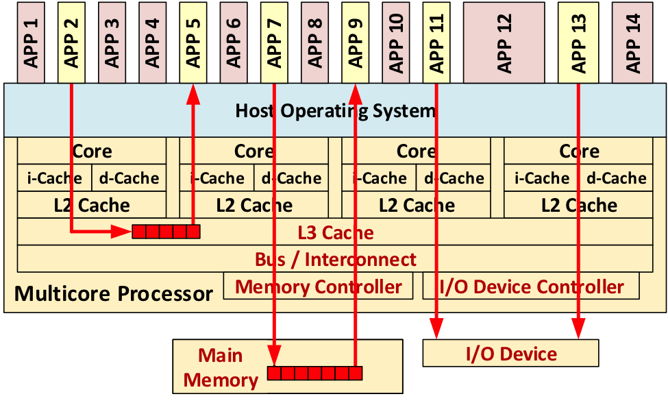

MultiCore Processor
An in-depth look at the design and analysis of multicore processors in our semester-long project.

This semester long project is broken up into four lab assignments. For each lab we built a baseline design and an alternative design. We implemented our own testing strategies. We then evaluated the impacts of the baseline and alternative designs based on cycle time, area, and energy.
- We exercised RTL design skills using Verilog as our hardware description language
- We developed skills including version control using Git, Linux/Unix development, and working as a team of design and verification engineers
- We learned functional level and register transfer level modeling
- We designed a control unit and datapath with a split design pattern, requiring us to learn how to build a datapath and an FSM control unit as well as how the control unit and datapath communicate.
- We learned about the encapsulation design principle and message interface design pattern through the ready/valid signal protocol
- We practiced hierarchy design principles by defining and instantiating modules.
- We used an incremental development design methodology by beginning with a baseline design before moving on to an alternate design.
All the computer architecture themes practiced in the labs are relevant to how computer architecture, design, and verification are implemented in industry.